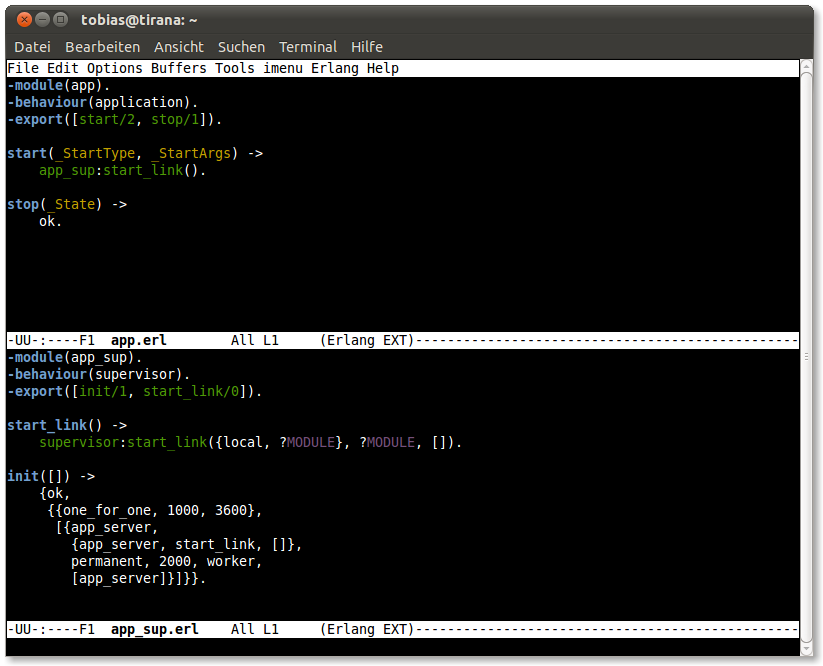
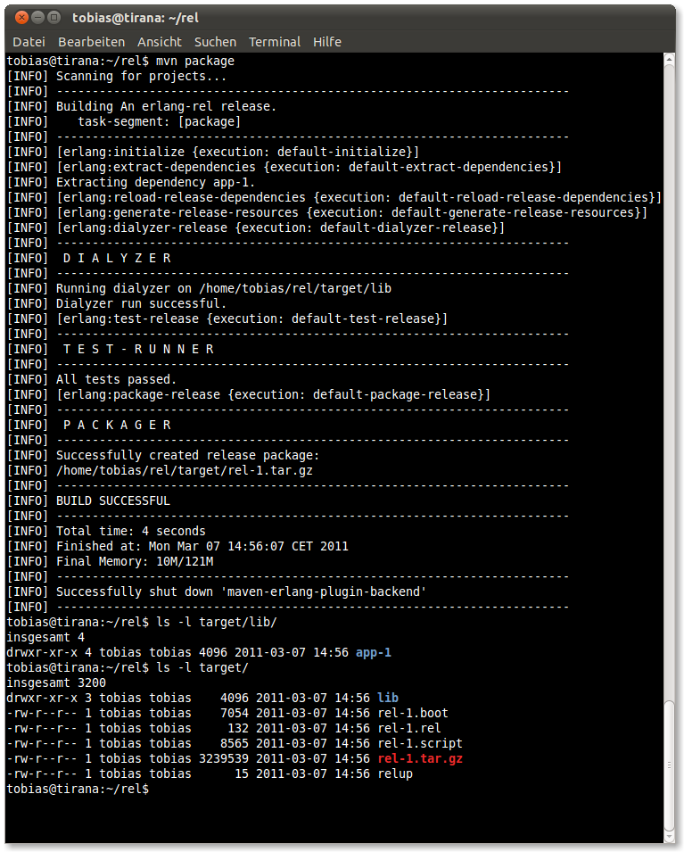
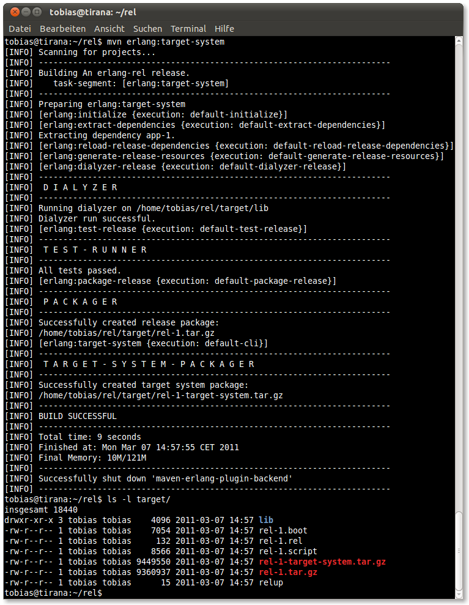

Packaging a release project
This example will show how to a release depending on one custom application project is packaged using the default local repository. Of course, this also applies to releases depending on several transitive application projects.
First of all we need a small application project. Our test project app consists of three modules. An application callback, a top-level supervisor and a test server.


The application resource file app.app and the application upgrade file app.appup for this application are listed below. Please note that we have to add the correct start module for non-library applications.
app.app:
{application, ${ARTIFACT},
[{description, ${DESCRIPTION}},
{id, ${ID}},
{vsn, ${VERSION}},
{modules, ${MODULES}},
{maxT, infinity},
{registered, ${REGISTERED}},
{included_applications, []},
{applications, [kernel, stdlib, sasl]},
{mod, {app, []}},
{env, []},
{start_phases, []}]}.app.appup:
{${VERSION}, [], []}.After that we package and install the application into the default local repository using mvn install. In case we would use a remote repository server like Sonatype Nexus the command mvn deploy must be used to deploy the artifact to the remote site.

Now that the application is available to other projects we create the release project rel having a dependency to the app application. In our example the release pom.xml has the below content and the rest of the needed project infrastructure was generated using the setup goal mvn erlang:setup -DwithExtras=false.
<?xml version="1.0" encoding="UTF-8"?>
<project xmlns="http://maven.apache.org/POM/4.0.0"
xmlns:xsi="http://www.w3.org/2001/XMLSchema-instance"
xsi:schemaLocation="http://maven.apache.org/POM/4.0.0 http://maven.apache.org/maven-v4_0_0.xsd">
<modelVersion>4.0.0</modelVersion>
<groupId>eu.lindenbaum</groupId>
<artifactId>rel</artifactId>
<packaging>erlang-rel</packaging>
<version>1</version>
<name>An erlang-rel release.</name>
<dependencies>
<dependency>
<groupId>eu.lindenbaum</groupId>
<artifactId>app</artifactId>
<version>1</version>
<type>erlang-otp</type>
</dependency>
</dependencies>
<build>
<plugins>
<plugin>
<groupId>eu.lindenbaum</groupId>
<artifactId>maven-erlang-plugin</artifactId>
<version>2.0.0</version>
<extensions>true</extensions>
<configuration>
<otpRelease>R14B01</otpRelease>
</configuration>
</plugin>
</plugins>
</build>
</project>Please note that we chose to build the release on erlang/OTP R14B01 and that the erlang backend node on our machine runs this release of erlang. The generated relup file was altered to the minimalistic content {${VERSION}, [], []}.. Now packaging the release using mvn package will issue the following output.

As can be seen the application dependency to app was resolved during the packaging process. The application package was extracted into the target/lib directory and the path was added to the code path of the backend node. The created release package rel-1.tar.gz can now be copied to a target system and installed using the standard erlang release handler as provided by the sasl application.
On UNIX systems the user can also generate a basic target system package that contains the erlang emulator and the necessary start scripts using the target system goal. To do so type mvn erlang:target-system.

The created target system package rel-1-target-system.tar.gz can be extracted and run on a random machine with compatible architecture and operating system.
In our case we extract the release directly into a temporary directory in the target directory. Please note that the environment variable RELEASE_NAME_TOP must be set to the target systems root directory when calling any start scripts of the target system.

The target system was by default started with the boot script generated for this release. The application's supervision tree was started automatically.

The test application app is loaded with all its modules.